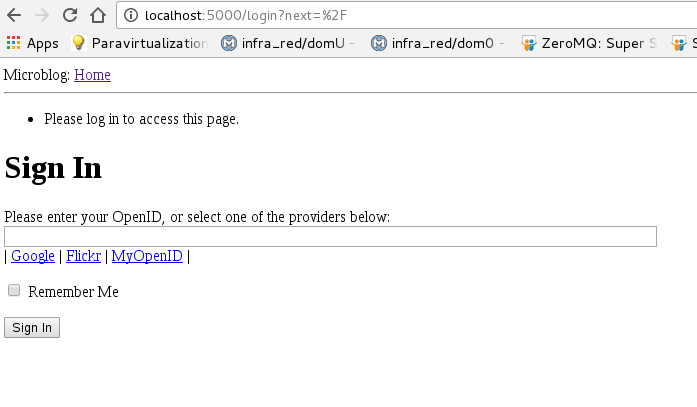

Tutorial de Flask parte 5 (login de los usuarios)
Publicado el sáb 24 septiembre 2016 en Tutorial Python • 7 min de lectura
Continuando con la serie de tutoriales sobre flask, en este caso se usará lo visto en la parte de base de datos para usarlo para iniciar sesión por parte de los usuarios.
Los artículos anteriores son:
Este artículo se basa en el artículo en Inglés de The Flask Mega tutorial, Part V: User Logins.
Compatibilidad con python3
Para que openid tenga soporte para python3 se hizo una actualización al archivo Dockerfile donde en vez de usar el openid de pip se baja la versión del repositorio github:
FROM python
WORKDIR /code
RUN pip install --upgrade pip
RUN pip install flask
RUN pip install flask-login
RUN pip install git+git://github.com/mitsuhiko/flask-openid.git
RUN pip install flask-mail
RUN pip install flask-sqlalchemy
RUN pip install sqlalchemy-migrate
RUN pip install flask-whooshalchemy
RUN pip install flask-wtf
RUN pip install flask-babel
RUN pip install guess_language
RUN pip install flipflop
RUN pip install coverage
RUN pip install redis
EXPOSE 5000
ADD . /code
CMD python run.py
La estructura de archivos y directorios del proyecto para este artículo es la siguiente:
tutorial-flask
├── app
│ ├── forms.py
│ ├── __init__.py
│ ├── models.py
│ ├── __pycache__
│ ├── templates
│ │ ├── base.html
│ │ ├── edit.html
│ │ ├── index.html
│ │ ├── login.html
│ │ ├── post.html
│ │ └── user.html
│ └── views.py
├── app.db
├── config.py
├── db_create.py
├── db_downgrade.py
├── db_migrate.py
├── db_repository
│ ├── __init__.py
│ ├── manage.py
│ ├── migrate.cfg
│ ├── __pycache__
│ ├── README
│ └── versions
│ ├── 001_migration.py
│ ├── 002_migration.py
│ ├── __init__.py
│ └── __pycache__
├── db_upgrade.py
├── docker-compose.yml
├── Dockerfile
├── __pycache__
├── README.md
├── run.py
└── tmp
Revisión de usuario en models.py
El archivo models.py contiene cambios en la clase User, esta actualización hace que sea amigable para usar flask-login:
#de app se importa db
from app import db
#Se crea la tabla User que hereda de db.Model
class User(db.Model):
#Se crea la columna id como clave primaria e integer
id = db.Column(db.Integer, primary_key=True)
#Se crea la columna nickname como string de tamagn 64, como unico.
usuario = db.Column(db.String(64), index=True, unique=True)
#Columna correo, de 120 de tamagno del string y unico.
correo = db.Column(db.String(120), index=True, unique=True)
#Posts. que tiene relacion con la clase Post (tabla post),
posts = db.relationship('Post', backref='author', lazy='dynamic')
#Se usa el decorador property, se consulta si esta atenticado
@property
def is_authenticated(self):
return True
#Se usa el decorador property y se consulta si esta activo
@property
def is_active(self):
return True
#Se usa el decorador property, se consulta si es anonimo el usuario
@property
def is_anonymous(self):
return False
#Se tra el id del usuario
def get_id(self):
try:
return unicode(self.id) # python 2
except NameError:
return str(self.id) # python 3
def __repr__(self):
return '<User %r>' % (self.usuario)
#Tabla Post que hereda de model
class Post(db.Model):
#Se crea el id del post como entero y clave primaria
id = db.Column(db.Integer, primary_key=True)
#Se crea la columna body como string de 140 caracteres
cuerpo = db.Column(db.String(140))
#Se define la marca de tiempo.
timestamp = db.Column(db.DateTime)
#Se define el id del usuario, es una clave foranea de la tabla usuario
#Columna id.
user_id = db.Column(db.Integer, db.ForeignKey('user.id'))
def __repr__(self):
return '<Post %r>' % (self.cuerpo)
Archivo views.py
El archivo views.py maneja ahora el inicio de sesión y el fin del mismo. A continuación el contenido del archivo:
#Se importa render_template, flash,redirect, session,url_for, request y g
from flask import render_template, flash, redirect, session, url_for, request, g
#Se importa login_user,logout_user,current_user y login_required
from flask.ext.login import login_user, logout_user, current_user, \
login_required
#Se importa la aplicacion app, db, lm y oid
from app import app, db, lm, oid
#De forms.py se importa LoginForm
from .forms import LoginForm
#Se importa User de models
from .models import User
#Se retorna el usuario a partir el id de la base de datos
#la funcion se usara por parte de flask-login
@lm.user_loader
def load_user(id):
return User.query.get(int(id))
#Se define g.user a partir del usuario actual.
#Esta funcion corre cada vez que una solicitud se realiza a
#fin de saber si el usuario hizo login y es el usuario actual
@app.before_request
def before_request():
g.user = current_user
#Se define la pagina index por defecto y se requiere que haga login el usuario
@app.route('/')
@app.route('/index')
@login_required
def index():
#Ahora no se usa un usuario por defecto, se comenta esa linea
#Ahora se toma el usuario g.user el cual es el usuario actual
user = g.user
#user = {'usuario': 'Ernesto'}
posts = [
{
'autor': {'usuario': 'John'},
'asunto': 'Un gran dia en Edimburgo!'
},
{
'autor': {'usuario': 'Jane'},
'asunto': 'Civil War, una gran pelicula!'
}
]
return render_template('index.html',
title='Inicio',
user=user,
posts=posts)
#Se define login con url /login con metodos GET y POST
#Se define el manejador de login.
@app.route('/login', methods=['GET', 'POST'])
@oid.loginhandler
def login():
#Se consulta si el usuario existe, y si esta autenticado
#Se redrcciona a la pagina index
if g.user is not None and g.user.is_authenticated:
return redirect(url_for('index'))
#Se crea una instancia de LoginForm
form = LoginForm()
#Se consulta si validate existe
if form.validate_on_submit():
#Se maneja la sesion a partir del formulario con la variable recuerdame
session['recuerdame'] = form.recuerdame.data
#Se returna el inicio de login y correo.
return oid.try_login(form.openid.data, ask_for=['usuario', 'correo'])
#Se renderiza la plantilla de login.
return render_template('login.html',
title='Inicio sesion',
form=form,
providers=app.config['PROVEEDORES_OPENID'])
#Se define after_login para la llamada de flask-login
@oid.after_login
def after_login(resp):
#Si no existe el campo correo o esta vacio
#Se devuelve un mensaje de login invalido y se redirecciona
#a la pagina de login
if resp.correo is None or resp.correo == "":
flash('Login invalido, intente de nuevo.')
return redirect(url_for('login'))
#Se trae los datos del usuario de la base de datos
user = User.query.filter_by(email=resp.correo).first()
#SI el usuario no existe
if user is None:
#Se trae el usuario de la resp
usuario = resp.usuario
#si usuario no existe o esta en blanco
#Se toma el nombre del usuario del correo
if usuario is None or usuario == "":
usuario = resp.correo.split('@')[0]
#Se agrega el usuario y correo a la base de datos.
user = User(usuario=usuario, correo=resp.correo)
db.session.add(user)
db.session.commit()
#Se define la variable recuerdame como falsa
recuerdame = False
#Si la variable recuerdame esta en el manejo de session
if 'recuerdame' in session:
#Se asigna el valor que maneja recuerdame en la sesion
recuerdame = session['recuerdame']
session.pop('recuerdame', None)
#Se inicia login, pasando el usuario y la variable recuerdame
#Se redirecciona de pagina
login_user(user, remember=recuerdame)
return redirect(request.args.get('next') or url_for('index'))
#Se define el fin de la sesion cuando se ve la pagina logout
#Se redirecciona a la pagina index pero primero se finaliza la session
@app.route('/logout')
def logout():
logout_user()
return redirect(url_for('index'))
A continuación se muestra el archivo __init__.py:
#Se impostan os, Flask, sqlalchemy, LoginManager, OpenID y basedir.
import os
from flask import Flask
from flask.ext.sqlalchemy import SQLAlchemy
from flask.ext.login import LoginManager
from flask.ext.openid import OpenID
from config import basedir
#Se crea la instancia de Flask
app = Flask(__name__)
#Se carga la configuracion de config.py
app.config.from_object('config')
#Se carga la info de la base de datos
db = SQLAlchemy(app)
#Se maneja login. con la app.
lm = LoginManager()
lm.init_app(app)
lm.login_view = 'login'
#Se define la carga de la info de OPenID
oid = OpenID(app, os.path.join(basedir, 'tmp'))
#Se importa views y models de app
from app import views, models
Archivo base.html
Este archivo ahora maneja el manejo de sesión que se hizo en views.py:
<html>
<head>
{% if title %}
<title>{{ title }} - microblog</title>
{% else %}
<title>microblog</title>
{% endif %}
</head>
<body>
<div>Microblog:
<a href="{{ url_for('index') }}">Home</a>
{% if g.user.is_authenticated %}
| <a href="{{ url_for('logout') }}">Logout</a>
{% endif %}
</div>
<hr>
{% with messages = get_flashed_messages() %}
{% if messages %}
<ul>
{% for message in messages %}
<li>{{ message }} </li>
{% endfor %}
</ul>
{% endif %}
{% endwith %}
{% block content %}{% endblock %}
</body>
</html>
Se construye la imagen Docker:
docker-compose build
docker-compose up
Al iniciar la aplicación se tiene la siguiente salida:
Recreating tutorialflask_tutorial_1
Attaching to tutorialflask_tutorial_1
tutorial_1 | * Running on http://0.0.0.0:5000/ (Press CTRL+C to quit)
tutorial_1 | * Restarting with stat
tutorial_1 | * Debugger is active!
tutorial_1 | * Debugger pin code: 733-227-386
El código fuente en gitlab tiene los siguientes cambios:
- Manejo del código y la página en Inglés (ya que en artículo futuro se usará internacionalización).
- Es necesario deshabilitar las notificaiones de track de sqlalchemy en el archivo config.py: SQLALCHEMY_TRACK_MODIFICATIONS = False
- Se cambian módulos deprecados por otros actualizados, los módulos atualizados son:
- flask_login
- flask_openid
- flask_sqlalchemy
El repositorio lo pueden ver acá.
Al abrir el navegador en http://localhost:5000 se tiene la siguiente figura:

Al llenar el formulario se tiene la siguiente figura (el mensaje que pide iniciar sesión para acceder a la página se eliminó):

Para hacer logout se abre el siguiente enlace http://localhost:5000/logout , lo cual cierra la sesión regresa a la página de inicio.
Los mensajes de la aplicación son los siguientes:
tutorial_1 | 172.17.0.1 - - [25/Sep/2016 01:13:39] "GET / HTTP/1.1" 302 -
tutorial_1 | 172.17.0.1 - - [25/Sep/2016 01:13:39] "GET /login?next=%2F HTTP/1.1" 200 -
tutorial_1 | 172.17.0.1 - - [25/Sep/2016 01:15:48] "POST /login?next=%2F HTTP/1.1" 302 -
tutorial_1 | 172.17.0.1 - - [25/Sep/2016 01:15:48] "GET /login?next=/ HTTP/1.1" 200 -
tutorial_1 | 172.17.0.1 - - [25/Sep/2016 01:18:23] "GET /logout HTTP/1.1" 302 -
tutorial_1 | 172.17.0.1 - - [25/Sep/2016 01:18:23] "GET /index HTTP/1.1" 302 -
tutorial_1 | 172.17.0.1 - - [25/Sep/2016 01:18:23] "GET /login?next=%2Findex HTTP/1.1" 200 -
Se nota los redireccionamientos de la página index a la de login y la de logout a la index y luego a login.
Para seguir correctamente el tutorial se recomienda bajar el código fuente del repositorio.
¡Haz tu donativo! Si te gustó el artículo puedes realizar un donativo con Bitcoin (BTC) usando la billetera digital de tu preferencia a la siguiente dirección: 17MtNybhdkA9GV3UNS6BTwPcuhjXoPrSzV
O Escaneando el código QR desde la billetera: